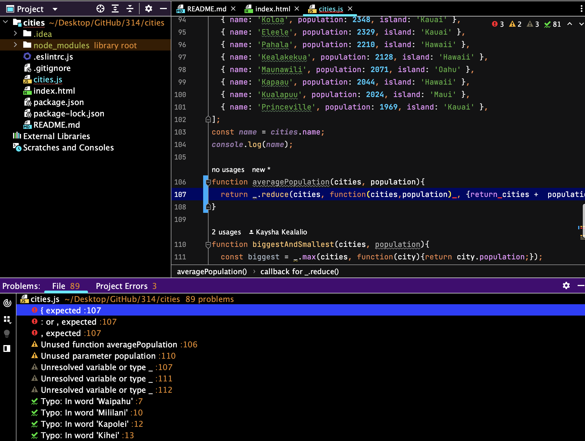

One of the most common phrases that computer scientists say is “write programs for people not computers”. If you make your code understandable, your future self and those who are reading your code will thank you. At the time when you are writing the program, you may know and understand what you’re doing but in a couple years when you look back at it and don’t see any comments or notes it may be confusing. This is why I believe that coding standards should be implemented with every program that you create. The use of coding standards can help future you and others to clearly read and understand your program.
Programming while using a coding standard can be a pain. You have to make sure the entire code is formatted correctly, use comments to indicate what your program is doing, use appropriate names for variables, and much more but in the end it will be worth all the hard work. Coding standards are used to help keep your code understable, organized, and also safe. A good tool that I have come to like is ESLint. ESLint is a code analysis tool that helps you find exactly where the problems in your code are, more specifically how you formatted your code. While programming with ESLint, it will give you four types of symbols: a red exclamation point (error), yellow exclamation point (warning), gray exclamation point (weak warning), and a green check mark. These symbols help with finding the big and small specific problems in your program which are a big help.
In my experience, I did enjoy using USLint even though it was a pain trying to get a single green check mark. A single green arrow means that your program runs nicely and there are no formatting issues. During a WOD, Workout of the Day, it is stressful to finish the program under a certain amount of time but it is even more stressful when you finish the program but there isn’t a single green check mark so you have to go back and correct your code. If you’re fast coding, ESLint will give you a run for your money. It will make sure that you finish your code while also maintaining the coding standards so you don’t have to go back and do it at the end.
Using coding standards and ESLint can not only make you a better programmer but also understand the programming language as well. It’s one thing to just use the code to do what needs to get done but it’s another thing to actually understand the code and use it with the correct formatting. In group projects, if everyone is using the same coding standards then almost everyone’s programs will be uniformed in a way. This makes it easy for just about anyone in your group to understand your program even if you have your own coding style.
Overall, I believe using coding standards, ESLint, and WODs will help you to become a better programmer. If you can code fast while maintaining the coding standards you, in my opinion, have made it in life. An organized, understandable, and a green check marked program is the best program you can have. Coding standards are used to help with the organization of the program, ESLint helps to identify the formatting issues in your program, and WODs are used to help you become a fast programmer. With these three combined, you should be set to doing just about anything.